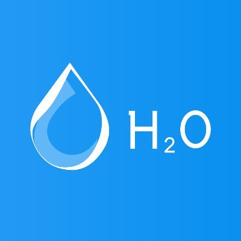

H2O YEAAAHHHHH

Fluoride death ball or Mother Nature's blood?
Somebody has been watching too much Erin Brockovich it seems. Yes I understand the government doesn't care all that much and probably is pumping trace amounts of pollutants into our tap water.
Ingredients
- aluminum
- fluoride
- various bacteria
- lead
- nitrates
- mercury
- uranium
Steps
- If you are really worried
- Act as an adult
- It is safe to drink tap water
- You could boil it first?
- Tap water is still waayyy better than that sugary soda drink!
Back